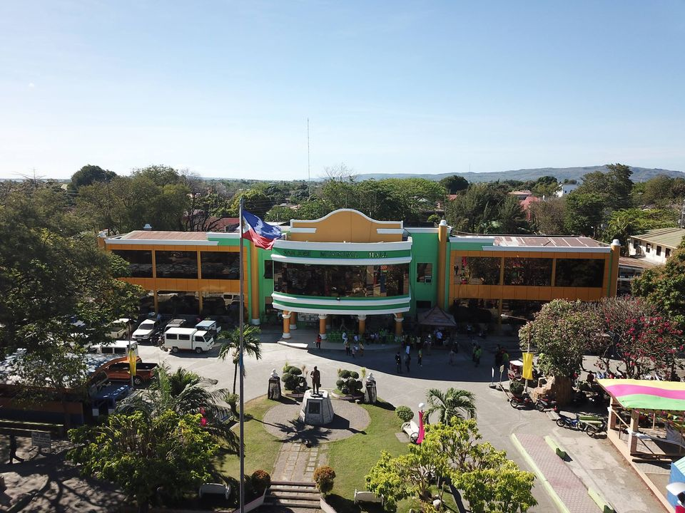

About Us
Welcome to San Jose! - a land of breathtaking landscapes, rich cultural heritage, and unparalleled natural beauty. Our website is dedicated to showcasing the hidden gems, picturesque spots, and unique destinations that make our province a true paradise for explorers and wanderers.
Mission
At the website "Explore Sanjose", the developer's mission is to bring the beauty of San Jose, Occidental Mindoro to the world. The Developer believes in promoting sustainable tourism, preservation of natural resources, and sharing stories that make each place special. Whether you're a seasoned traveler or a local resident looking for new adventures, the developers invites you to embark on a journey with us.
Discover the Wonders
From the majestic mountains that pierce the sky to the serene coastal landscapes, San Jose, Occidental Mindoro is a diverse tapestry of natural wonders. Explore lush green valleys, crystal-clear lakes, and vibrant cityscapes that harmoniously blend tradition and modernity. Our website is your guide to discovering the hidden corners and iconic landmarks that define the unique charm of our Town.
Cultural Riches
Beyond the landscapes, San Jose exerts a rich cultural heritage that spans centuries. Immerse yourself in the traditions, festivals, and arts that reflect the heart and soul of our communities. Meet the warm and welcoming locals and indigenous people who are the guardians of our cultural legacy, and let their stories enrich your travel experiences.
Sustainability Matters
As passionate advocates for responsible tourism, the developer prioritizes sustainability in every aspect of the user's exploration. We aim to raise awareness about the importance of preserving our environment and supporting local and indigenous communities. Through responsible travel, the developer aspires to create a positive impact and to ensure that the beauty of San Jose endures for generations to come.
Join the Journey
Whether you're planning your next adventure, seeking travel inspiration, or simply curious about the wonders of San Jose, the website "Explore Sanjose" is your go-to resource. Join us in celebrating the beauty, diversity, and richness of our town. Together, let's embark on a journey to uncover the magic that lies within San Jose, Occidental Mindoro.
Thank you for being a part of our community.
Happy Exploring!
Explore Sanjose
